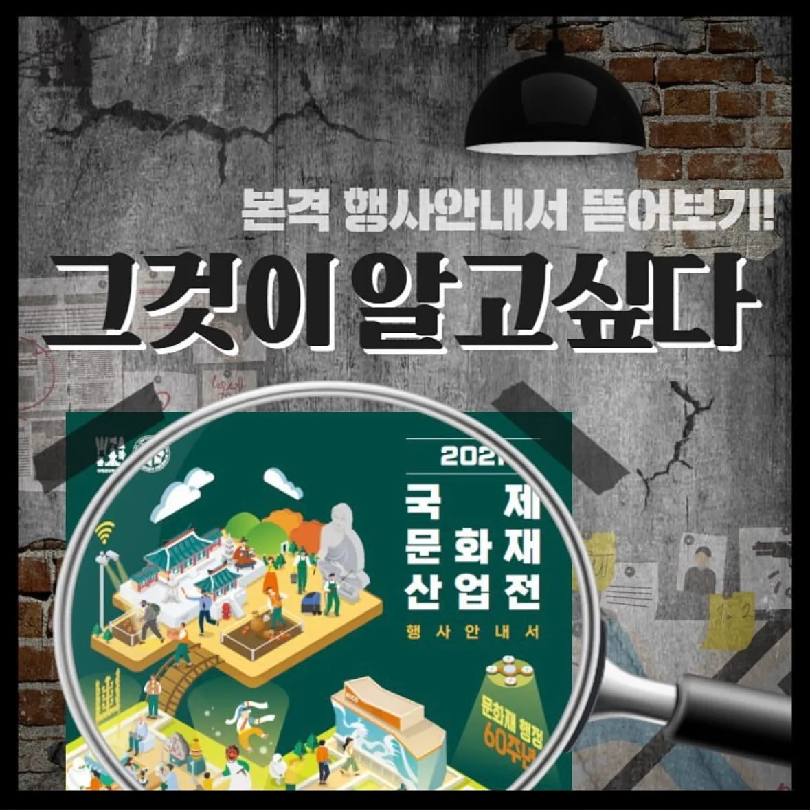
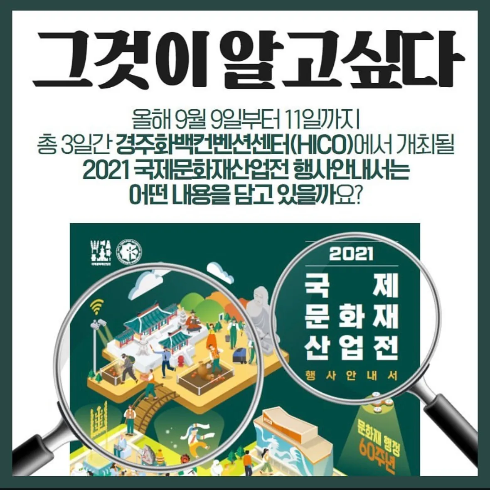

01 · DIGITAL OPERATIONS
스마트 럭키드로우
현장 수기 운영의 불편을 개선하기 위해 디지털 도구로 전환했습니다. 위 화면에서 실제 서비스를 체험할 수 있습니다.
참관객 대기 시간 감소 · 인쇄 원가 및 운영 인건비 2명→1명 · 참여율 130% 향상
WHO I AM
전시·MICE 프로젝트 기획·운영
참가사 커뮤니케이션부터 프로그램 운영, 콘텐츠 제작까지 현장에서 필요한 일을 직접 조율하고 완성합니다.
EDUCATION & CREDENTIALS
계명대학교 경영학 · 관광경영학 복수전공 · 4년제 졸업
컨벤션기획사 2급 · 컴퓨터활용능력 2급 · 2종 보통 운전면허
대구컨벤션뷰로·한국MICE협회 MICE 교육 수료
EXPERIENCE
서울국제유아교육전·키즈페어 등 전시 기획, 참가사 유치, 특별관 기획 및 현장 운영
WBC 2024 등 국제학술대회 전시·참가자 운영, 4,000여 명 참가자와 부스·공식 프로그램 관리
행사 기획과 운영 지원, 참가자·참가업체 커뮤니케이션
국제문화화산업전·한옥문화박람회 전시 지원, 홍보물·뉴스레터·카드뉴스 제작 및 현장 운영
SELECTED PORTFOLIO
현장 수기 운영의 불편을 개선하기 위해 디지털 도구로 전환했습니다. 위 화면에서 실제 서비스를 체험할 수 있습니다.


모집 홍보 영상을 만들고 실제 광고 집행까지 연결한 캠페인입니다.
행사 소개와 참여 안내를 단계별로 설계하고, 다음 행사에도 재사용할 수 있는 콘텐츠 자산으로 정리했습니다.


관람객·참가업체·운영 스태프별로 필요한 정보를 나누고, 순간마다 꺼내 쓸 수 있는 메시지 체계로 만들었습니다.